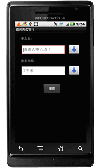
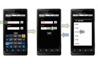
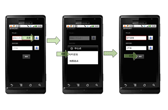
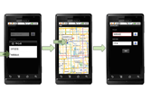
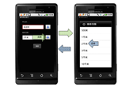
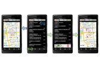
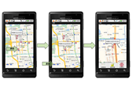
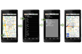
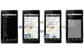

1.开始进入地图查询搜索。
首先在手机银行主应用程序界面中选择点击“地图查询”，进入地图查询搜索功能。

2.设置搜索中心点。
提供三种方式设置中心点位置。
2.1 第一种方式直接输入搜索关键字设置中心点。
1) 点击显示中心点内容的文本框弹出键盘。
2) 例如输入“海淀桥”。
3) 然后点击搜索范围的“ ”按钮进入搜索范围的选择界面。
4) 选择某个搜索范围值后，再点击“搜索”键。

2.2 第二种方式点击GPS定位，采用GPS定位值作为搜索中心点。
1) 点击中心点的“ ”按钮，在弹出的窗口中选择“GPS定位”然后等待GPS模块获取信息提示成功。
2) 中心点下方显示“GPS获取”。
3) 在搜索范围内选择某个范围值后，再点击“搜索”键。

2.3 第三种方式点击“地图选点”，进入地图后点击选择中心点。
1) 点击中心点的“ ”按钮，在弹出的窗口中选择“地图选点”进入设置搜索中心点地图界面。
2) 通过点击地图将头像图标标记到地图上的某个位置上，点击“头像图标”，回到地图查询界面。
3) 在中心点下方出现“地图指定”。
4) 在搜索范围内选择某个范围值后，再点击“搜索”键。

3. 选择搜索范围并开始搜索。搜索范围默认为2千米。

4. 查看搜索结果列表。
该结果列表是按照与中心点距离远近的顺序显示排列，可直接在菜单中选择“地图显示”查看所有搜出结果显示在地图上的图形标注，或在搜索结果列表中点击某条结果直接显示在地图上。

4.1 生成驾车导航路径。
1) 在搜索出结果的地图上选择要到达的某个结果图形标注。
2) 点击“ ”图标，计算显示出驾车导航路径。

4.2 公交换乘查询。
1) 在搜索出结果的地图上选择某个结果图形标注。
2) 点击“ ”图标计算显示出公交换乘线路列表。
3) 点击某一条结果显示出具体的换成路线描述。
4) 点击任一条描述进入地图查看界面。

5) 点击“ ”图标可以在地图上查看上一个或下一个的描述路段；点击“列表”则返回公交换乘线路列表；点击“概览”则返回具体的换乘路线描述界面。
